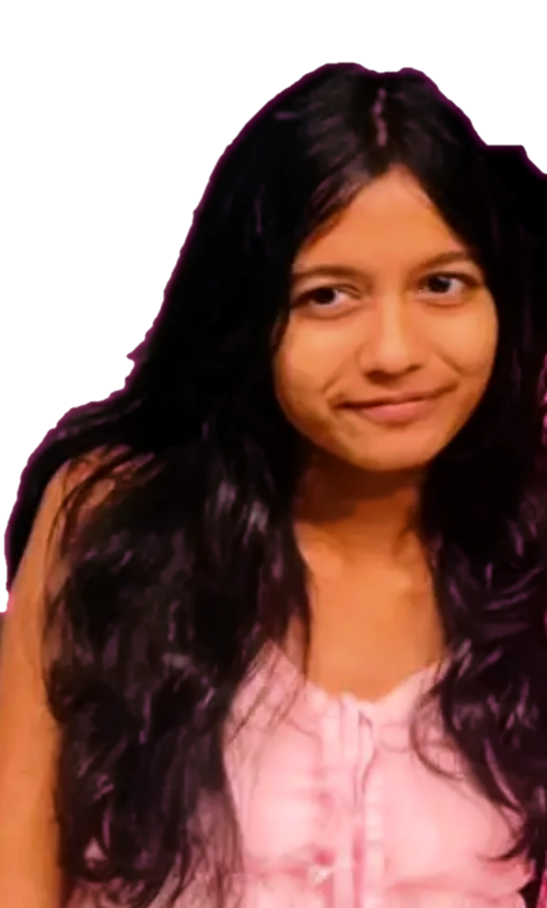
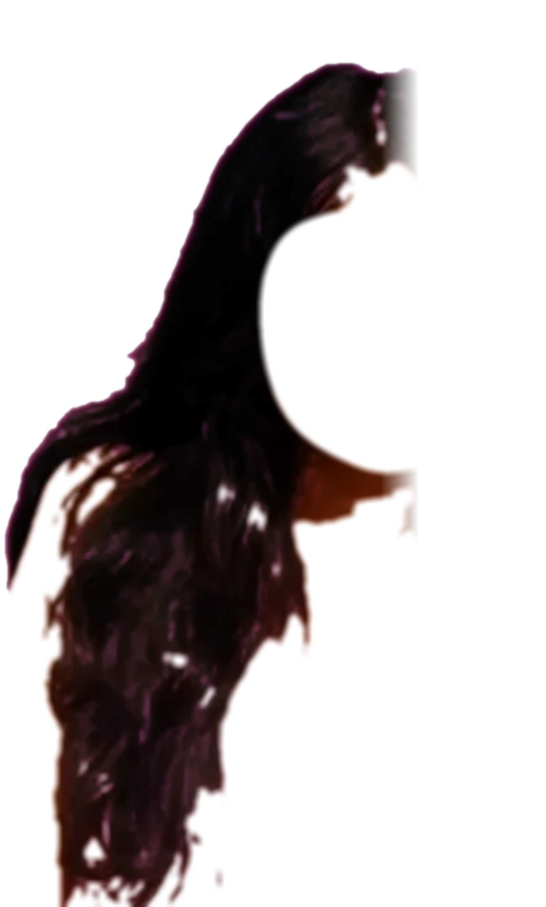
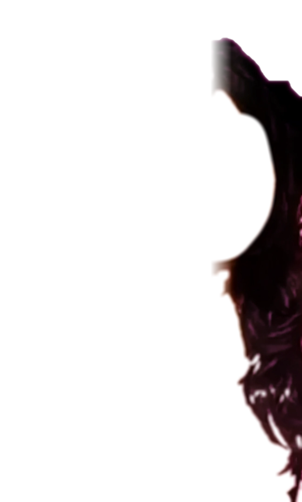

BIHANSA
NEURAL HOLOGRAM / PROFILE 01
LINK STABLE
VOICE OFF
00:00:00
INITIALISING NEURAL PROJECTION
mounting face mesh…



NEURAL HOLOGRAM / PROFILE 01
INITIALISING NEURAL PROJECTION
mounting face mesh…